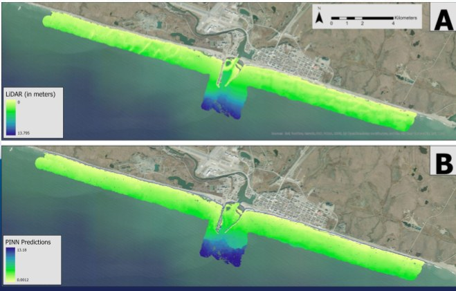
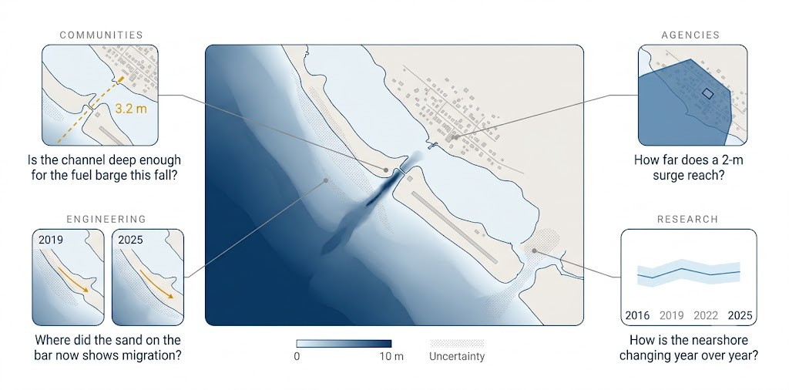
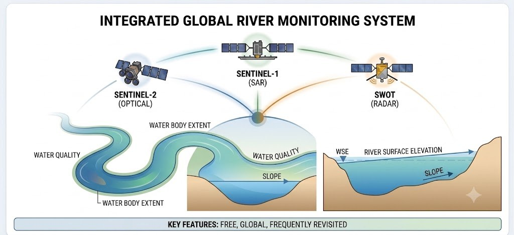
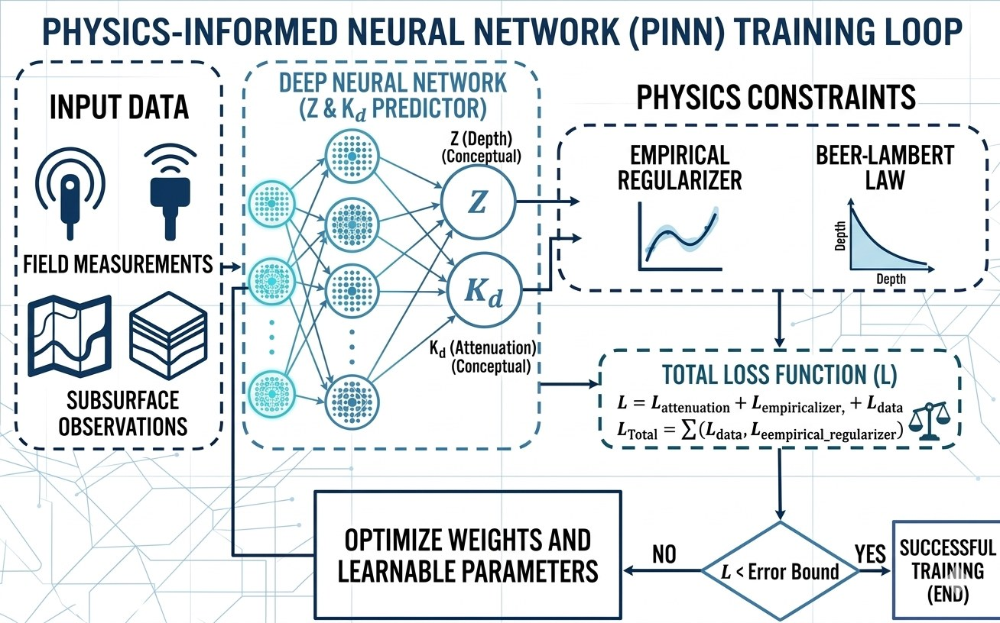
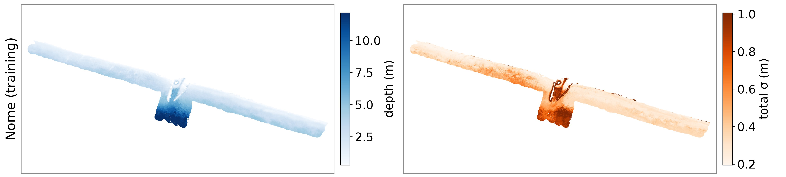
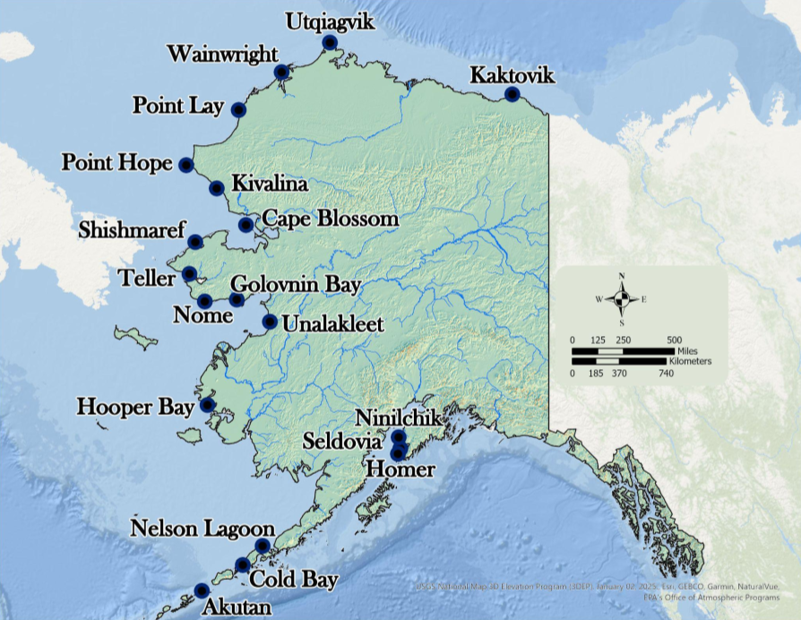
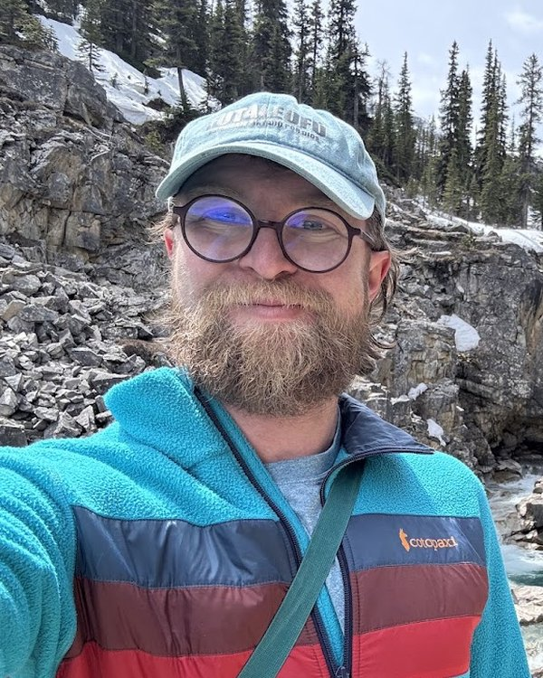
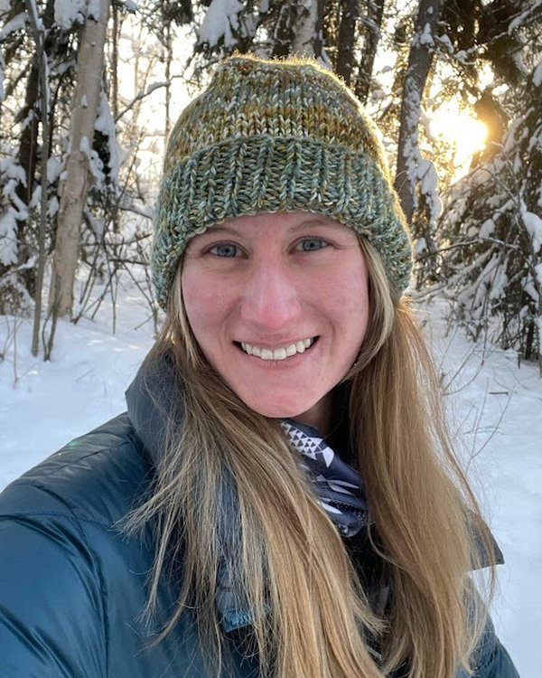

Nearshore coastal
Most SDB methods were built for clear tropical water. Ours was trained on the sediment-heavy, ice-affected Alaskan coast, where turbidity is the design case rather than the failure mode.
Alaska's nearshore waters are critically undermapped, limiting the information available for planning and operations. We use machine learning and free satellite imagery to produce satellite-derived bathymetry products that support safer navigation, infrastructure planning, habitat assessment, emergency response, and coastal decision-making across Alaska.
We turn publicly accessible, regularly repeating satellite imagery into satellite-derived bathymetry (SDB) using physics-informed, probabilistic models that provide interpretable, defensible depth in the turbid, sediment-heavy water where older methods failed. We are also building agentic frameworks that fold community knowledge into the map itself, so what residents know about their coast becomes part of the estimate rather than a note beside it.
For nearshore coastal and riverine areas alike we deliver the same two rasters for any requested date since 2016: a best-estimate depth grid and a per-pixel uncertainty map. The two share a model family, but each is tuned to the physics of its own environment.

Most SDB methods were built for clear tropical water. Ours was trained on the sediment-heavy, ice-affected Alaskan coast, where turbidity is the design case rather than the failure mode.
Channel depth and cross-sections from SWOT surface elevation and Sentinel-2, for navigation, flood modeling, and fish passage — the same engine, extended inland.
Currently we are conducting customer discovery with National NSF I-Corps. We work directly with Alaskan coastal communities: residents and regional experts flag what the imagery misses — a shifted bar, a new channel, ice — and our models are built to take that knowledge in and revise the map, not just be checked against it afterward.
Relocation planning, erosion monitoring, and safe barge and skiff landings.
Charting gaps, flood and storm-surge modeling, infrastructure permitting.
Pre-survey reconnaissance and change detection between vessel campaigns.
Repeatable, uncertainty-aware depth for habitat, sediment, and climate work.

Translating geospatial data into decisions is no small feat. At FathomWave Geospatial, we integrate the strength of geospatial AI agents wrapped in a controllable agent harness to push data through the processing pipeline. Geospatial AI agents allow more data to be translated into decisions, ending in tangible products that can be used and enhanced by local knowledge holders.
If you're one of these and have a site in mind, tell us about it. Early partners shape what we build.
A depth estimate without an error bar is a guess. It might be right, but the number itself gives you no way to tell, and no way to defend the decision you make on it. Our networks must satisfy the physics of how light attenuates through water, and they return a probability distribution for every pixel, not a single number. That uncertainty map is the product: it tells a planner which depths to build on, which to verify, and where to send a survey vessel.
Free, global, revisited every few days. Sentinel-2 for optical depth and SWOT/GRADES for river data.

PINN and ProbAI architectures trained against LiDAR ground truth, with the physics residual as a loss term. The network predicts a distribution for every pixel, not a point, so the answer carries its own confidence. Interpretable by construction.

Two GeoTIFF rasters for the date you ask for: the most probable depth and the uncertainty around it, pixel by pixel. Any coast with Sentinel-2 coverage, any date since 2016. Re-run after every storm season.

From Akutan to Kaktovik, each site is validated against airborne LiDAR. These are the coasts where the problem is hardest: turbid, ice-affected waters that are largely uncharted.

Spun out of the UAF Coastal Remote Sensing Lab. The methods are peer-reviewed and open where we can. * Accuracy figures on this page are from work currently under peer review.
Work published by the FathomWave team that shows how we think about the coast, including tutorials, explainers, courses, and field notes. We also point to the reports and observing-system briefs that frame the problem we work on.
Rinzler, McArthur, Helder, Sierra & Trochim
McArthur, Lomelino & Trochim
University of Alaska Fairbanks
Lomelino, McArthur & Trochim
US AON technical brief on risk management and hazard mitigation
FathomWave Geospatial is a student-led team of coastal scientists and machine-learning researchers building depth data for Alaskan communities. Our products are built for a range of end users, supporting community and relocation planning, navigation and safe landings, infrastructure and permitting decisions, and flood and storm-surge models. For most of Alaska's nearshore coast and rivers, the depth data we're creating is out of date or has never existed at all.
FathomWave spun out of the UAF Coastal Mapping Program. The methods our business is founded on are scientifically rigorous, peer-reviewed, built to scale, and open source wherever possible.

Barrett FlynnCEO · PhD student
Maddi McArthurCOO · PhD studentTell us where. We'll tell you what the satellites can see, what they can't, and what it would take.
hello@fathomwave.com